La Guerra de las Flores
Equipo Editorial
Traiciones, celos y rompimiento de palabras son algunos de los temas abordados con la primera exPresidenta Federal del Estado 89, Dark R0se, tras su retiro del Estado donde presidió y se migró al Estado 90 para mayor estabilidad y protección.
¿De verdad eres tan mala como dicen? ¿Qué pasó?
Definitivamente no soy una persona malvada. Soy humano. Cometo errores como todos. Pero no soy malvado. Cuando llegué a R5, venía del servidor 30. El servidor 30 estaba dirigido por una sola alianza. Se apropiaban de todo lo que querían y quemaban a cualquiera que se saliera con la suya. Cuando llegué a R5, lo único que siempre quise fue tener un servidor unificado donde la alianza principal apoyara al servidor en su conjunto. Intenté ser justo con todos, sin importar lo fuertes que fueran o lo grande que fuera su alianza. Y entiendo que eso no siempre hacía felices a todos, pero lo justo sigue siendo justo. No deberías tener privilegios especiales ni ser tratado injustamente solo por no gastar tanto dinero como otros.
Si es así, ¿por qué se hicieron tantas acusaciones contra usted?
Sinceramente, creo que, a estas alturas, la gente sigue culpándome porque no quieren afrontar lo que han hecho. Si bien mi sistema no siempre contentó a todos, mantuvo la equidad. Sirvió al bien común. Cuando intentaron derribarme, y una esencia derribó el sistema que construí, el servidor quedó sumido en el caos. Los responsables de los rumores y el odio que me derribaron ahora no quieren asumir la responsabilidad de no solo eliminarme, sino que también crearon caos en el servidor. Es más fácil culpar a otro que asumir la responsabilidad. Me recuerda un poco a lo que pasa en las noticias estadounidenses. Es una técnica de distracción. Si te mantienen mirando hacia aquí, no los verás. Tomemos como ejemplo lo que pasó con los pozos de pesca. He oído de varias personas que me culpan de que Krak alcanzara el nivel 3 de 89. No soy el líder de mi alianza. No tengo voz ni voto en los lugares a los que vamos. Voy a donde me dicen, como todos los demás. Creo que me culpan para no tener que asumir la responsabilidad y analizarse a sí mismos y por qué pudimos asumirla. Los servidores no trabajan en equipo. No intentan ayudarse mutuamente. Pero al culparme, distraen a la gente de mirar al liderazgo del servidor 89. A estas alturas, no soy más que su chivo expiatorio. Una técnica de distracción.
¿Qué es "lo que han hecho"?
Cuando digo lo que han hecho, me refiero a quitarme el "poder". O al menos así empezó todo. Mira lo que hice con RLHN y la siesta. Era un trabajo para mí. Me conectaba todos los días sobre las siete y cerraba todas las noches sobre la 1 de la madrugada. Pasaba el día entero lidiando con problemas del servidor. Hablando con los otros R cinco. Desarrollando planes para las próximas guerras y eventos versus. Y cuando era presidente, repartía mejoras. Hablaba con la gente del servidor para hablar de sus problemas y lo que les gustaría que sucediera. Era trabajo. Por desgracia, algunos lo veían como poder. Y querían ese poder para sí mismos. Así que cuando dejé RLHN y me expulsaron de la siesta, nadie retomó mi trabajo. La respuesta fue: "Que lo resuelvan ellos mismos". Oh, estarán bien. El sistema que mantenía nuestro servidor unido y funcionando como un solo equipo se desmoronó lentamente. Las alianzas empezaron a atacarse entre sí. La gente empezó a abandonar. Todo se vino abajo. Este juego está diseñado como un juego de estrategia comunitario. Por eso tenemos alianzas, estados y agrupaciones. Hay que trabajar con la alianza, luego con el estado y, finalmente, dentro de la agrupación. Cuando todo gira en torno a una sola persona y sus deseos, el sistema se vuelve defectuoso. Hay que jugar en grupo o se está condenado al fracaso.
¿Qué hiciste mal? Parece que fue a propósito.
Creo que mi mayor arrepentimiento, y mi mayor error, fue confiar en la persona equivocada. Tenía a una persona en este juego que era mi mano derecha, como mi hermana. Le confiaba todo. Si tenía un día frustrante, me desahogaba con ella. Le contaba todos mis planes. Compartía con ella todo lo que pasaba en otras alianzas. Un día, recibí un mensaje de alguien en quien confiaba, que desconfiaba de ella. Y no quería creerlo. Y luego alguien más me contactó y me envió capturas de pantalla de una sala privada que había creado para poner a la gente en mi contra. Y seguía sin creerlo. Luego recibí una llamada en Discord diciéndome desesperadamente que no eran ellos, que ese era su plan. Y seguía sin creerlo. Me hizo cuestionar todo lo que le había dicho y todo lo que ella me había dicho. Pero incluso después de todo eso, seguía sin querer dejar a mi amiga. No fue hasta que descubrí que ella fue quien inició la votación para sacarme de la siesta. Aunque ella sabía exactamente por qué hice lo que hice, había visto las capturas de pantalla que me llevaron a atacar a ese jugador ese día. Y usó eso para deshacerse de mí. Básicamente, tomó todo lo que le dije y lo tergiversó en mi contra. Fue entonces cuando supe que era hora de dejar este servidor y contacté con Pepe para que me aceptara. Durante los dos meses siguientes a eso, observé. Escuché. Y oí todo lo que decía sobre mí. Vi cómo todos se volvían en mi contra. Las mismas personas a las que había ayudado muchas veces. Las mismas personas a las que había escuchado cuando tenían un mal día. Las mismas personas a las que había defendido múltiples veces. Todos se volvieron contra mí.
¿Quién era ella?
SpicyJo. Y lo más triste es que todavía me importa. A veces la extraño. Compartimos muchas risas y muchas historias sobre nuestras vidas y nuestras familias. Y me duele saber que para ella solo era un juego retorcido para ganarse mi confianza. Pero para mí, la consideraba una verdadera amiga. Y, sinceramente, sé que, aunque escribas este artículo, muchos lo ignorarán. Porque es muy buena convenciéndote de que le importas y de que eres su amiga.
¿Nos puedes contar más, explicando qué es eso de la "sala privada que había creado para poner a la gente en mi contra"?
Había una sala privada en Discord creada por ella. Las personas invitadas a esa sala eran personas que alguna vez habían expresado una queja. Por ejemplo, cuando el día de Versus solo se celebraba en nuestro servidor, el grupo de Nat votaba sobre las reglas de ese día. Y, por supuesto, algunos no estaban contentos con esa votación. Querían una batalla campal, pero el Nat había votado solo para atacar al oponente. Así que, en esencia, había un grupo de personas con quejas simples que podrían haberse discutido en una sala, alimentándose mutuamente. Mucho después, le pregunté sobre esta sala. Afirmó que solo era para que la gente discutiera sus quejas allí, no en el chat de la alianza. El mayor problema con su explicación es que, si no me informan de estos problemas, nunca podré resolverlos, por lo tanto, ¿cómo puede la sala beneficiar a la alianza? Así que ahora tenemos una sala llena de personas quejándose y alimentándose mutuamente de su ira. Y nadie aborda ni intenta resolver nada.
Si esa sala era para que la gente expresara sus quejas, entonces ¿cómo o por qué se utiliza para volverse en tu contra?
Porque la sala se mantuvo en completo secreto para mí. Como R5, si mi gente tiene problemas, necesito saberlo para poder abordarlos o al menos explicarles la situación. Cuando la gente no está contenta con algo, muchas veces se puede resolver con una simple conversación. Porque esta sala se mantuvo en secreto para mí. Nunca pude hablar con esta gente. No sabía que tenían quejas. Así que ahora tienes una sala de, digamos, 10 personas quejándose de decisiones que he tomado o decisiones que ha tomado el camarero. Ahora todos están hablando entre sí y alimentándose de la ira de los demás. Lo que me convierte en el malo. Entonces Spicy Jo también dirigió esa conversación. Deberíamos irnos. Y se fueron, pero no todas las personas que pensaban que iban a ir con ellos. No recuerdo el número exacto, pero fueron unas 5 o 7 personas las que se fueron. La razón por la que solo se fueron esa cantidad fue por las capturas de pantalla que recibí. No tuve toda la conversación de lo que pasó allí, pero tuve suficientes fragmentos como para poder abordar una o dos de las quejas que tenía la gente sin dejar entrever que sabía sobre la sala.
¿Jo alguna vez ha estado en desacuerdo con tu plan, ha ido en tu contra y tú sabes o has refutado algo tuyo?
¿Me preguntas? ¿Alguna vez ha influido en mis decisiones?
Sí
Sería mucho repasar. Hablé con ella de todo. Sí, había muchos planes que me ayudó a rehacer. Corrigió todos mis anuncios presidenciales. Revisó cada plan de batalla. Estaba en la siesta. Tendría que analizar todo lo que se decía y hacía. Lo único que recuerdo ahora mismo es que hubo algunas conversaciones durante la siesta en las que me sentí incómodo por la forma en que las dirigía. Pero confiaba plenamente en ella. Básicamente, se encargó de la siesta mientras yo dormía. Así de grande era mi confianza en ella.
Si ese no es el problema entonces ¿por qué ella se opuso a ti?
He pasado muchos días pensando que esto se debió al momento en que todo se fue a pique. Ocurrió con el último evento floral. Todo el servidor, todas las alianzas, me enviaron flores. Probablemente fue una de las cosas más dulces y maravillosas que me ha pasado jugando a este juego. Me hizo sentir que todo el esfuerzo que le dediqué al servidor fue realmente apreciado. Desafortunadamente, la camarera no le demostró ese cariño. Me repetía que no le importaba, pero de repente, empezó una competición en la alianza para ver quién enviaba más flores. El ganador se convertiría en el rey de las rosas. Y, por supuesto, este es un juego competitivo con gente competitiva. Un grupo de chicos se unió a la iniciativa y empezó a enviarle flores de inmediato. Gastaron cientos de dólares en flores para ganar ese título. Hoop, Knighty y Rotor (MrBigDEnergy) lo dieron todo. Rotor ganó, y Knighty empezó a gastar como un loco para convertirse en el más poderoso del servidor. Todos bromeábamos diciendo que lo hacía para impresionarla. Porque todos sabían que estaba enamorado de ella. Así que, si honestamente tuviera que elegir un momento, esa competencia sería ese momento.
¿Knighty a Jo?
Ah, sí, Knighty estaba locamente enamorado de ella. Todo el mundo lo sabía.
¿Jo también lo sabía?
Por supuesto. Ella y yo nos reímos muchas veces.
¿Quién recibió más flores?
¿En nuestra alianza?
Sí
Aun así lo hice. Como dije, todo el personal me enviaba flores. Ese recuerdo siempre estará en mi mente. Pasé horas enviando agradecimientos a todos los que me enviaron una flor. Aunque solo fuera una.
¿Entonces la sala privada en Discord se creó porque Jo no ganó?
Honestamente, esto es solo mi especulación. Porque me enteré después del evento. Puede que siempre haya sido su plan tomar el control. O puede que ese evento haya despertado los celos.
Si el odio comenzó dentro de la alianza, ¿cómo se extendió por todo el estado?
Porque dejó la alianza. Su primer intento por desmantelarla no funcionó. Cuando se fue, solo le siguieron unos pocos. Y uno de ellos regresó a mí. Se convirtió en R5 Inx, luego en R4 en BROO, y luego en R5 de WSS. Fíjense que todas esas alianzas se desmoronaron.
¿Dices que ella dejó la alianza porque no ganó el evento de flores y comenzó a difundir mentiras sobre ti?
No, no, no. Creo que el evento de las flores generó celos. Por lo que me dijeron, su objetivo era controlar la alianza más fuerte y el servidor. Y técnicamente, prácticamente lo logró. ¿Y qué hizo con ello? Dirigió el NAP, incluso cuando solo era una R cuatro en WSS. Y aquí está mi punto: fue bajo su liderazgo que el servidor cayó. Pero nunca se oye hablar de eso. Solo se oye que es mi culpa no tener voz ni voto en el servidor, gracias a su voto para excluirme. Ahora bien, déjenme aclarar algo, porque sé que esto va a salir a la luz. Como dije antes, hablo con ella de todo y me desahogué con ella. ¿Y he hablado mal de otros R5 o R4? Sí. Porque a veces hay que desahogarse. Y definitivamente he dicho algunas cosas no muy agradables sobre la gente, pero lo dije por frustración y en un lugar donde pensé que era confidencial.
¿Quién fue con ella a otras alianzas, cuál alianza fue y qué pasó?
La primera alianza a la que acudieron fue INX, luego BROO, luego WSS. Hoop, Nic, Al Capone, fckr y uno o dos más.
Tras dejar RLHN (ahora NWE), ¿qué pasó con la alianza que había abandonado? En ese momento, ¿seguías siendo R5?
Sí, todavía era R5 de RLHN. Incorporamos nuevos jugadores y ascendí a algunos a R4 para ocupar su lugar.
Hablemos ahora del momento en que empezaste a quemar todo el servidor. ¿Podrías explicarlo con más detalle?
Primero que nada, no era todo el servidor. Adame era un chico de mi alianza que quería ser R4. Fue muy servicial y definitivamente estaba considerando convertirlo en uno. Desafortunadamente, corrían muchos rumores sobre él, diciendo y haciendo cosas. Y honestamente, no sabía si era cierto, así que básicamente lo observaba para ver si era confiable. Entonces, ¿por qué estaba pasando todo esto? Descubrí que había creado una sala en el juego e invitó a todos los de nivel 30, excepto a mí y a los otros 30 de mi alianza que me eran leales. Literalmente, me desperté con cinco personas diferentes enviándome capturas de pantalla de la sala que había creado. Donde estaba discutiendo con estos 30 sobre su intención de crear una súper alianza que pudiera competir con RLHN. Así que fui inmediatamente a hablar con él. Y, por supuesto, entró en la sala y empezó a decir que ella sabía que sabía. Lo que no sabía es que me estaban enviando capturas de pantalla de cada palabra que se decía en esa sala. Así que le hice saber que todas estas personas que él está intentando convencer para crear esta súper alianza son mis amigos y me están contando todo lo que él dice. Por supuesto, luego me cuenta que solo estaba tratando de reunir a todos los 30 primero y que luego me traería a mí para que liderara la alianza. No tenía idea de que ya había visto que estaba hablando con TQL sobre usar su alianza como la nueva súper alianza. Cuando le mostré las capturas de pantalla de todo lo que tenía, se confesó, se disculpó y me rogó que lo perdonara. En ese momento, pensé que nunca sería un R4. Pero le daría una segunda oportunidad. La aceptó o al menos pensé que la aceptó. El día que hicimos Capital, descubrí que había estado enviando mensajes a los R5, diciéndoles que si lo convertían en R4, traería consigo a todos los jugadores fuertes de RLHN. NSTR aceptó su oferta y Aeyd se fue con él. Inmediatamente me fui a dormir y les hice saber que este tipo había traicionado mi alianza no una, sino dos veces, y que lo iba a quemar. Georgie me dijo que ahora era su miembro y que lo defendería. Así que él fue quemado, Georgie fue quemada, y cualquiera que se involucrara fue quemado. Creed fue un golpe lateral, por la forma irrespetuosa en que me había estado hablando. Kyoubou los quemó. Después de quemar a Adame, dije que me iba, y él tomó mi teléfono y quemó al resto. Así que básicamente cuatro o cinco personas fueron quemadas ese día. Fue entonces cuando Joe entró en acción y me expulsó de la siesta. Básicamente le di todo lo que quería. ¿Y qué hizo con ello? Bueno, todos vemos el estado de 89 ahora.
En pocas palabras, ¿quién es Georgie y qué te contó?
Georgie era la líder de NSTR; más tarde cambió su nombre a Princesa Rey. Y si aún no saben quién es, era esa chica que siempre estaba en el chat mundial, diciendo cosas inapropiadas a cualquier hombre que la escuchara. Nunca había visto a una mujer coquetear tanto en mi vida. Y juro que creo haber visto más de sus pechos que yo sola. La Mayor, la traición con ella es... Siempre protegí esa alianza. Ese fue el trato que hice con Aeyd. Él ya no quería ser líder, pero quería asegurarse de que la alianza siempre estuviera protegida. Así que hice todo lo posible por protegerlos. Incluso les envié miembros para ayudarlos a tomar ciudades cuando no podían tomarlas ellos mismos. Hice tratos con otras alianzas para darles ciudades. Fue como una doble puñalada por la espalda. Así que sí, perdí la cabeza. Me sentí como Julio César siendo apuñalado por mis propios amigos.
¿Puedes explicar "tomó mi teléfono y quemó el resto de ellos"?
Solo quemé a la persona. Dije que iba a quemar a Adame. Luego dije que renunciaba. Kyoubou y yo somos amigos de la vida real y él estaba en mi casa ese día por capital. Así que literalmente estaba allí mirándome a la cara viendo el dolor y la herida que sentía por la traición y cuando dejé mi teléfono y dije que renunciaba, lo cogió y me dijo ¿estás seguro de que renuncias? Y le dije sí, que se jodan. Y procedió a quemar a las otras cuatro personas. Cero a King Princess, golpeó aro, una vez por interferir, cero a Adame otra vez, luego fue y golpeó a Creed. Golpeó a Creed porque era el administrador del Discord de la siesta. Así que había visto cada conversación y cada comentario irrespetuoso que Creed le había hecho a cada mujer allí. No le gustaba mucho. También quisiera abordar el hecho de que la gente ha dicho que hice comentarios racistas hacia Aeyd. Cuando lo llamé falso musulmán. Primero, tengo amigos musulmanes muy cercanos. De hecho, conozco bastante bien la religión y conozco sus principios. Al llamarlo falso musulmán, estaba diciendo que no es fiel a la religión que tanto pregona y de la que se enorgullece de ser miembro. Cuando todo esto le ocurrió, yo estaba ayunando con él durante el Ramadán, porque apoyo a mis feligreses. Que luego me apuñalara por la espalda fue demasiado. Nunca quise faltarle el respeto a ningún musulmán. Respeto todas las religiones. Todos me perseguían por eso, pero ¿no es irónico que los indonesios me siguieran hasta mi nueva alianza? Todos son musulmanes y conocen el respeto que les mostré y sus creencias religiosas.
Después de ese evento, ¿qué pasó con usted y todos los involucrados?
Así que después de que todo eso pasara y me calmara, decidí que no iba a dejar que me echaran. Rotor decidió que se quedaría con R5. Sassy se enfureció porque no la convertí en R5. Y la única razón por la que no lo hice fue porque no estaba conectada y tiene mal carácter. En ese momento sentí que la alianza necesitaba a alguien tranquilo que los liderara hasta que yo retomara el liderazgo. Bueno, eso nunca sucedió. Kyoubou formó una pequeña alianza y todos nos unimos. Entonces recordé que Joe había destruido a BROO, pero la alianza seguía ahí como una alianza agrícola. Así que le escribí a Lenny y le pregunté si podíamos unirnos. Dijo que sí, y luego me informó del mal trato que recibían en TQL y me preguntó si estaría interesado en reconstruir la alianza. Le dije que sí. Ahora bien, ¿por qué está pasando todo esto? Rogue le ruega a Nap que me deje unirme a ellos. Por supuesto, Joe dijo que no. El becario de Rogue dijo que me aceptarían incluso sin la aprobación de Nap. Rechacé su oferta porque, sinceramente, adoro a Rogue y a sus miembros, y no quería ponerlos en peligro. Se habían esforzado mucho para entrar en la siesta por sí solos y no iba a quitárselo. Así que recuperamos a BROO. Trajimos a muchos antiguos miembros de vuelta a la alianza. Y los indonesios de RLHN y de otras alianzas también vinieron. Eso nos devolvió al top 10. La siesta se negó a dejarnos volver, a pesar de que nos habíamos ganado nuestro puesto. Le informaron a Lenny que tendría que deshacerse de mí. Se negó porque la había ayudado a reconstruirla. La alianza era blanco de ataques diarios. Nos atacaban constantemente, pero seguíamos creciendo. Supongo que una vez que se cansaron de atacarnos y se dieron cuenta de que no íbamos a ninguna parte, nos permitieron volver a la siesta. Con la salvedad de que no podía hablar en el chat de la siesta. Fiel a lo que dice Maxi, intentó que volviera a la siesta. El problema era que su novia no me quería allí. Siempre que le preguntaba, me decía que lo revisara. Supongo que no se dio cuenta de que todo lo que se decía en el chat de la siesta me lo contaba a mí. Así que sí, la alianza pudo entrar, pero yo seguía bloqueado del chat. Supongo que temía que, si volvía, recuperara el control.
¿Cuál es tu relación actual con SpicyJo? ¿Cómo la definirías?
No tengo ninguna relación con ella; está bloqueada en Discord y en el juego. Pero se tomó el tiempo de enviarme una amenaza a través de Kyoubou.
¿Existe la posibilidad de que ambos puedan reconciliarse?
No, una vez que alguien te ha herido tan profundamente, no hay vuelta atrás. Puedo ser cortés, pero jamás podría volver a ser su amiga.
¿Quieres enviarle un mensaje a través de Luxury Time?
No. Pero gracias por la oferta.
¿Algún mensaje para las personas que no conocen tu historia y para los que la conocen parcialmente?
Mi mensaje para 89 sería que dejaran atrás el pasado e intentaran trabajar juntos. La única manera de que tengan éxito es si pueden dejarlo todo atrás y empezar de cero. Ser el equipo de servicio único que sé que pueden ser. Y que sepan que no tengo nada en contra de 89. Nunca he culpado al servidor por las acciones de unos pocos. Sigo creyendo en todos ellos, aunque no hayan creído en mí.
¿Y para aquellos que fueron parte de esa historia que todavía están en el Estado #89?
Yo diría que aprendan de sus errores y mejoren por el bien del servidor. Nuestro pasado es solo eso, el pasado. Yo he seguido adelante y ustedes deberían hacer lo mismo.
¿Cómo fueron esas últimas dos semanas de tu estadía en el Estado 89 antes de migrar al Estado 90?
Sin duda, fue una experiencia mixta para mí. Estaba emocionado por finalmente escapar del caos y el drama. Pero también estaba triste porque dejaría atrás a muchos de mis amigos. Y, sinceramente, hasta el momento de migrar, solo esperaba que el servidor mejorara. Esperando que las pequeñas peleas terminaran. Que la gente realmente empezara a priorizar el servidor. Pero cuando vi que atacaban a la gente por irse, supe que eso nunca cambiaría.
¿En qué alianza estuviste y cómo era la vida allí?
Estoy en KRAK. Es un lugar agradable. Hay mucho menos drama en el servidor y en la alianza. Pepe da instrucciones claras sobre lo que hacemos y lo que se espera de nosotros. El ambiente es agradable y la gente siempre está dispuesta a ayudarse mutuamente. El servidor en general funciona en conjunto. Es genial.
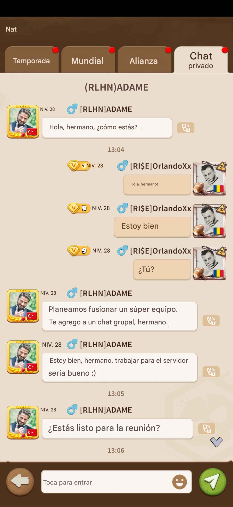
Imagen proporcionada por Dark R0se y traducida a español.
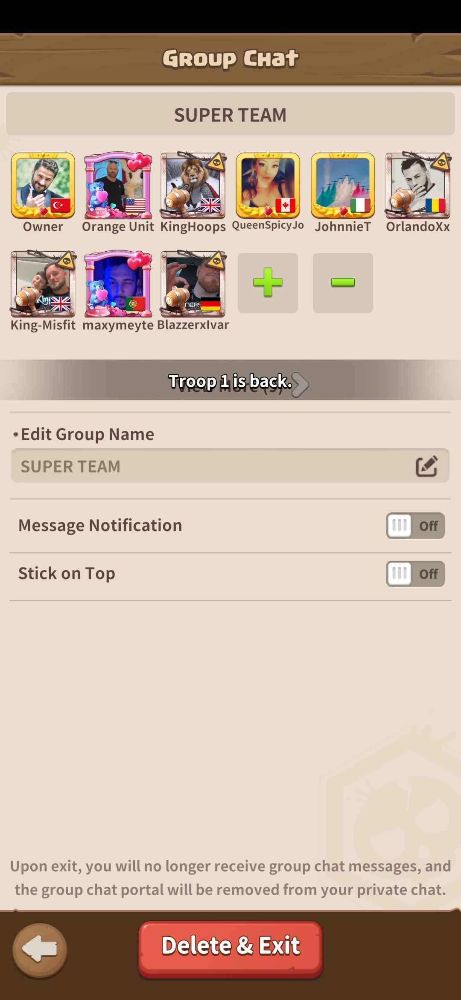
Imagen proporcionada por Dark R0se.
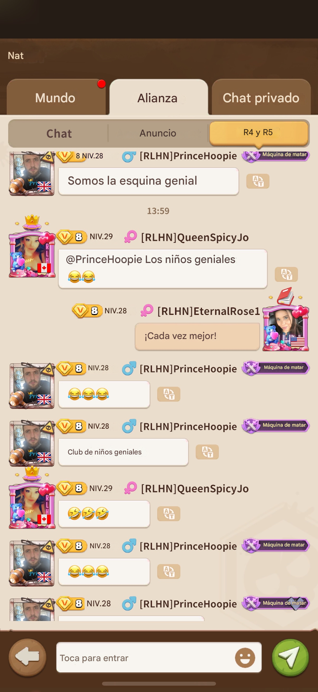
Imagen proporcionada por Dark R0se y traducida a español. ¨Estos son ellos riéndose en mi cara porque no sabían que yo sabía de su sala de chat secreta a la que llamaban el club de los chicos geniales.¨, expresó la Dark R0se.
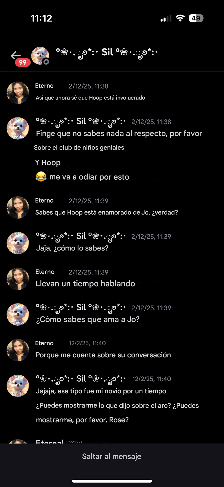
Imagen proporcionada por Dark R0se y traducida a español.
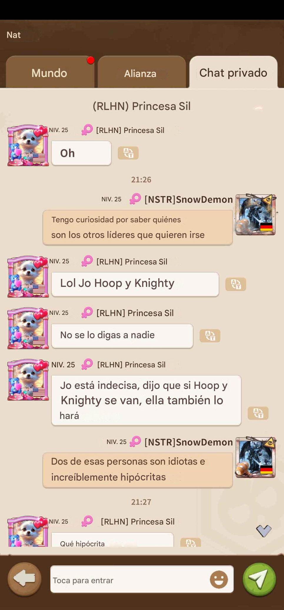
Imagen proporcionada por Dark R0se y traducida a español.
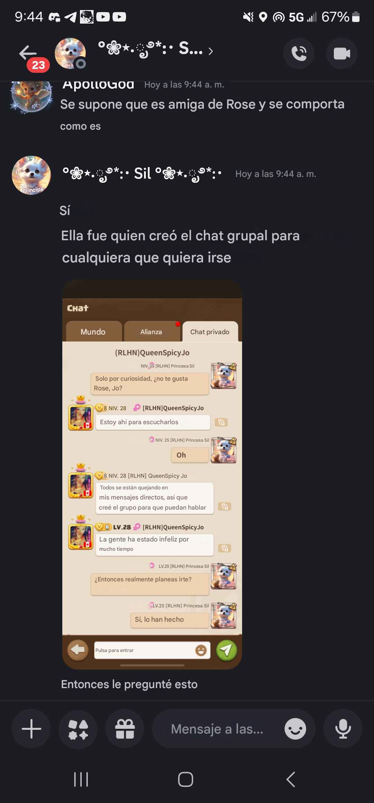
Imagen proporcionada por Dark R0se y traducida a español.
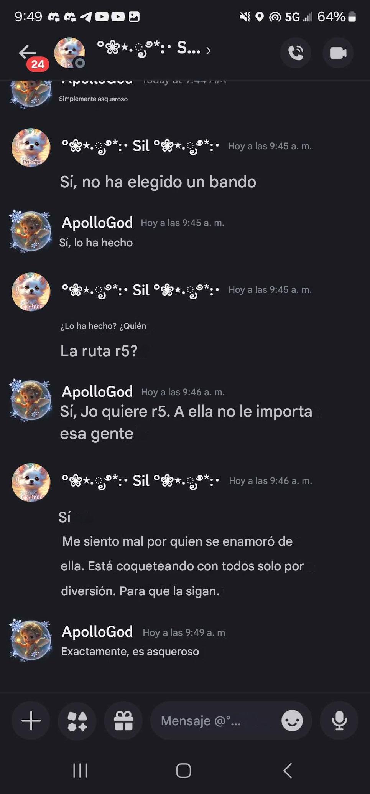
Imagen proporcionada por Dark R0se y traducida a español.
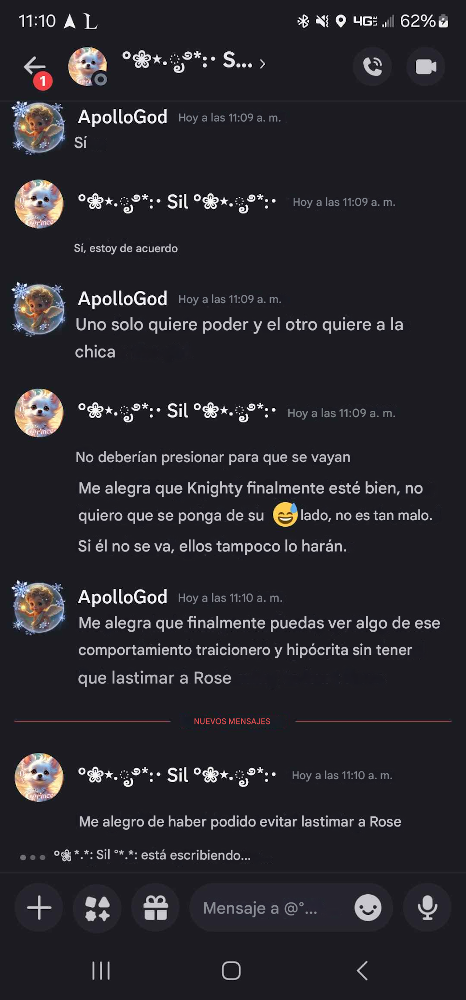
Imagen proporcionada por Dark R0se y traducida a español.
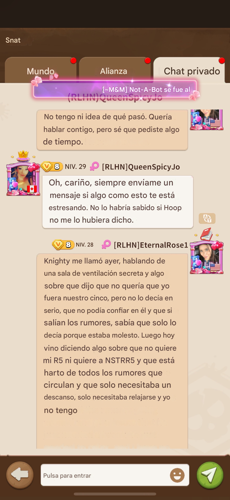
Imagen proporcionada por Dark R0se y traducida a español.
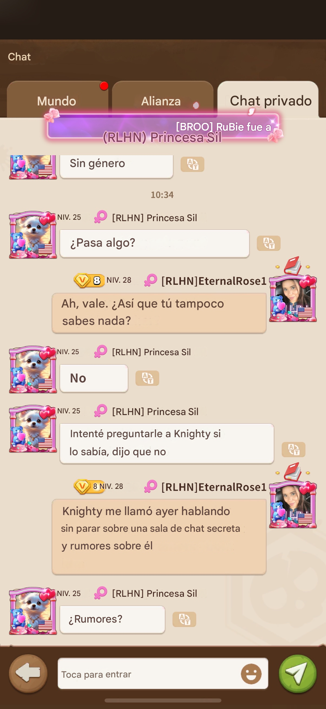
Imagen proporcionada por Dark R0se y traducida a español.
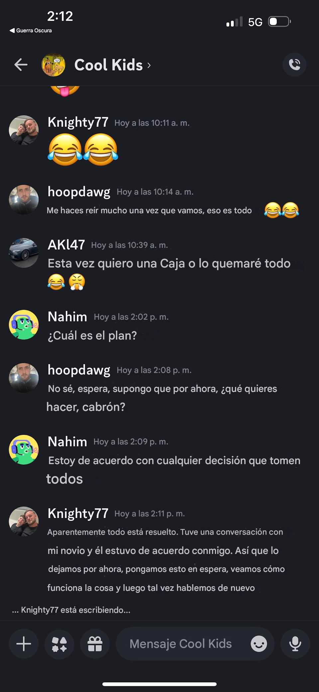
Imagen proporcionada por Dark R0se y traducida a español.

Imagen proporcionada por Dark R0se y traducida a español.